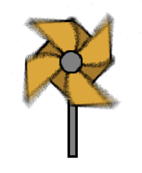

Hover over some text to find tips and descriptions

The aperture refers to the opening of a lens. This is where the light pass through.
If the opening is wide, more light pass through.
The aperture is measured in f/stops
small f/stop number = large aperture.
large f/stop number = small aperture
If the opening is wide, more light pass through.
The aperture is measured in f/stops
small f/stop number = large aperture.
large f/stop number = small aperture
The bigger the aperture, the smaller the depth of field.
Your background will be blurry.
Tip: A small depth of field is good for portrait photography
Your background will be blurry.
Tip: A small depth of field is good for portrait photography
The smaller the aperture, the bigger the depth of field.
Your background will be sharp.
Tip: A large depth of field is good for landscape photography
Your background will be sharp.
Tip: A large depth of field is good for landscape photography
The aperture influences the depth of field. The depth of field is the amount of your image that is acceptably sharp.
The smaller the f/stop, the larger the opening in the lens.
More light will pass through the lens and your photo will be brighter
More light will pass through the lens and your photo will be brighter
The larger the f/stop, the smaller the opening in the lens.
Less light will pass through the lens and your photo will be darker
Less light will pass through the lens and your photo will be darker
The aperture influences the brightness of your image.

The shutter speed is the amount of time your camera will let light in.
Shutter speed is measured in fraction of a second. For instance 1/4 means a quarter of a second. When the shutter speed is longer than a second, double quotations are added after the number
Shutter speed is measured in fraction of a second. For instance 1/4 means a quarter of a second. When the shutter speed is longer than a second, double quotations are added after the number
The longer the shutter speed, the more motion blur you will have in your image. Moving objects will appeared blurry.
Tip: If you use a shutter speed slower than 1/60 second, use a tripod.
Tip: If you use a shutter speed slower than 1/60 second, use a tripod.
The faster the shutter speed, the less motion blur you will have in your image. Moving objects will appeared sharp.
Tip: If your image is blurry and you don't want that effect, choose a faster shutter speed
Tip: If your image is blurry and you don't want that effect, choose a faster shutter speed
The shutter speed influences the motion blur of your images. Motion blur is the representation of movements.
if your shutter speed is long, moving objects will be blurry.
If your shutter speed is fast, moving objects will be frozen in their movements and these objects will appeared sharp.
if your shutter speed is long, moving objects will be blurry.
If your shutter speed is fast, moving objects will be frozen in their movements and these objects will appeared sharp.
A slower shutter speed lets more light pass through the lens. Your image will be brighter
A faster shutter speed lets less light pass through the lens. Your image will be darker
The shutter speed influences the brightness of your image.
The ISO measures the sensitivity of the image sensor to light.
The lower the ISO value, the less sensitive the sensor is. The higher the ISO value, the more sensitive the sensor is.
The lower the ISO value, the less sensitive the sensor is. The higher the ISO value, the more sensitive the sensor is.
When the ISO value is low, there will be less noise in your image because the sensor is less sensitive to light. Your image will be sharp
When the ISO value is high, there will be more noise in your image because the sensor is more sensitive to light. Your image will be noisy or grainy
The ISO influences the noise in your image
The lower the ISO value, the darker your image will be
Tip: A low ISO value is good for day light photography
Tip: A low ISO value is good for day light photography
The higher the ISO value, the brighter your image will be
Tip: A higher ISO value is good for night photography
Tip: A higher ISO value is good for night photography
The ISO influences the brightness of your image
Tip: If your image is too dark and you don't want to change the aperture and shutter speed values, choose a higher ISO
Tip: If your image is too dark and you don't want to change the aperture and shutter speed values, choose a higher ISO
Sources:
https://photographylife.com
https://digital-photography-school.com